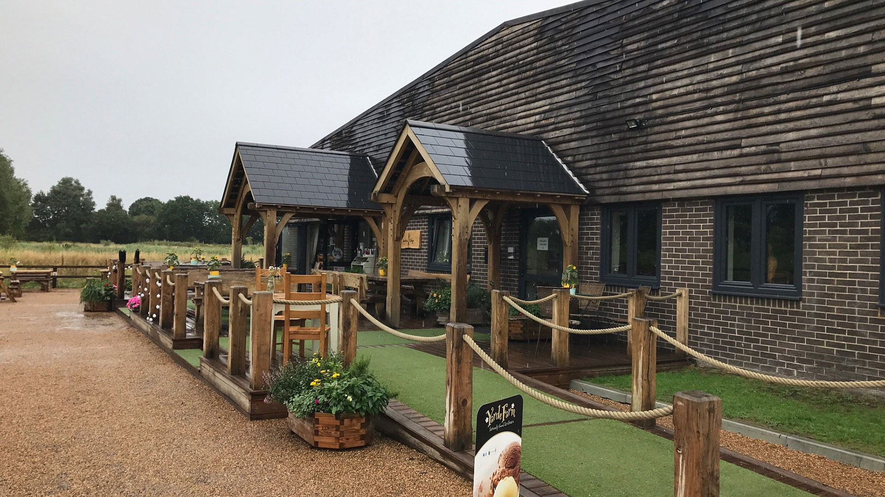

Take a break and savor the flavors of the countryside at Ashkirk farms cafe. Our cozy café serves up a delicious selection of homemade treats, hearty meals, and refreshing drinks, all inspired by the fresh, seasonal ingredients from our farm and local producers. Whether you're craving a warm cup of coffee, a slice of freshly baked cake, or a wholesome lunch, we’ve got something to delight every taste. Relax in our inviting indoor space or enjoy the scenic views from our outdoor seating—it's the perfect spot to unwind during your visit to the farm.
